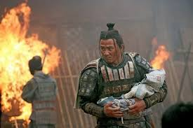

삼국시대의 삼국 가운데 하나이자 스스로 후한의 계승을 표방하였던 국가.
정식 국호는 한(漢)이나, 전후한과의 구분을 위해 여러 연구 서적이나 매체에서는 주로 촉한(蜀漢) 또는 지역 이름을 따 촉(蜀)이라 부른다. 마지막 한나라라는 의미로 계한(季漢)이라고도 불린다.
수도는 성도. 영토는 한나라 행정구역상의 익주와 그 주변 지역으로 오늘날의 충칭시, 쓰촨성 전체, 윈난성 대부분, 구이저우성 전체, 산시성와 간쑤성 지역 일부를 포함한다. 삼국 중 가장 작은 나라였고 실제로 후한 13주 중 익주 1개주만 온전히 가졌지만 그래도 이 익주가 진한시대에 상당히 개발되고 번영한 주였기 때문에, 후한 13주 중 무려 10개주가량을 차지한 위나라와의 인구 차이는 5배 정도였다. 여기에 방어하기 좋은 지형, 위나라와 달리 주변 이민족 제어에 성공해 북벌에 집중할 수 있는 여건을 마련해 삼국간의 정립 구도를 만들었다.
삼국지 매니아들에게는 하북의 거대한 경제체제와 물량으로 대표되는 위, 장강을 낀 수전 특화로 기억되는 오와 비교되어 산악지형을 위시한 험지 전투에 특화된 이미지를 가지고 있다.[13]